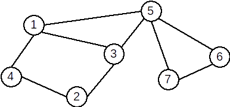

★Definiție. Se numește lanț o succesiune de vârfuri \( L = \left[ x_1, x_2, \cdots x_k \right] \) cu proprietatea că oricare două vârfuri consecutive sunt adiacente.
Vârfurile x1 şi xk se numesc extremitățile lanțului. Numărul k-1 se numește lungimea lanțului și este numărul de muchii din care este format.
Lanțul care conține numai vârfuri distincte, două câte două, este lanț elementar.
Lanțul care conține numai muchii distincte este lanț simplu. Dacă muchiile unui lanț nu sunt distincte se numește lanț compus.
★Definiție. Se numește ciclu un lanț simplu în care primul vârf este identic cu ultimul. Dacă toate vârfurile sunt distincte, mai puțin primul și ultimul, se numește ciclu elementar.
★Lungimea unui ciclu este egală cu numărul de muchii din ciclu. Lungimea minimă a unui ciclu este 3.
Un ciclu se numește par dacă lungimea sa este pară, respectiv impar în caz contrar.
Un graf neorientat care nu conține niciun ciclu se numește aciclic.
★Exemplu: În graful de mai jos:

- \( [2,4,1,3,5,7] \) este un lanț elementar
- \( [3,5,7,6,5,1] \) este un lanț neelementar, dar simplu
- \( [2,3,5,7,6,5,3,1] \) este un lanț compus
- \( [1,5,3,2,4,1] \) este un ciclu elementar
- \( [1,3,5,7,6,5,1] \) este un ciclu neelementar
★Definiție. Un graf neorientat se numește graf conex dacă pentru oricare două vârfuri x și y diferite ale sale, există cel puțin un lanț care le leagă, adică x este extremitatea inițială și y este extremitatea finală.
Un graf cu un singur nod este, prin definiție, conex.
★Definiție. Se numește componentă conexă a unui graf G=(X,U) un subgraf H=(Y, V), conex, al lui G
care are proprietatea că nu există nici un lanț în G care să lege un vârf din Y cu un vârf din X – Y.
Subgraful H este conex și maximal cu această proprietate (dacă s-ar mai adăuga un vârf nu ar mai fi conex.)
Un graf este conex dacă admite o singură componentă conexă.
★Exemplu:
Graful următor este conex:
Graful următor nu este conex și are 4 componente conexe.
★Definiție. Un graf este biconex dacă este conex şi pentru orice vârf eliminat subgraful generat îşi păstrează proprietatea de conexitate.